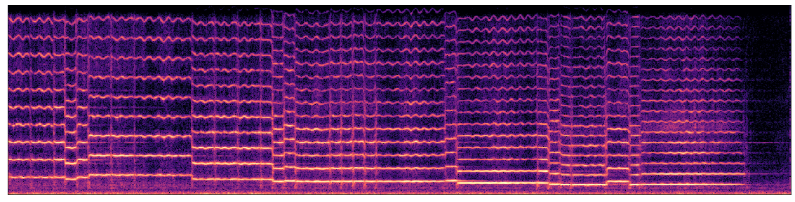
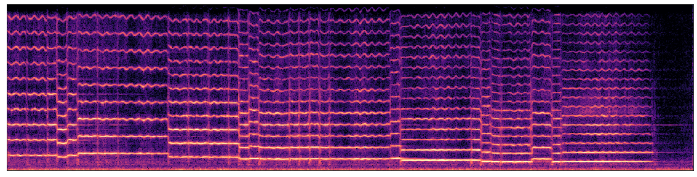
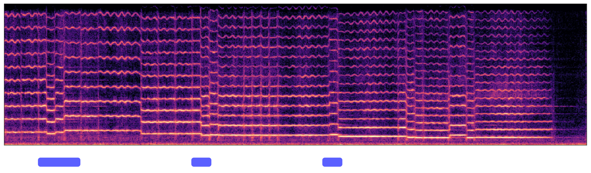
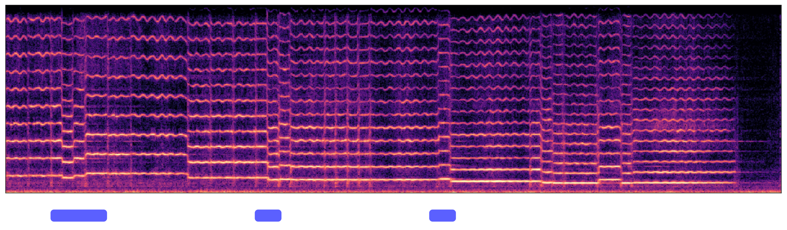
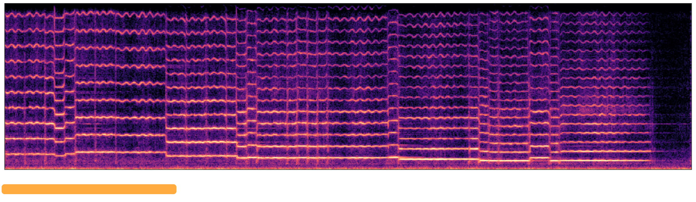
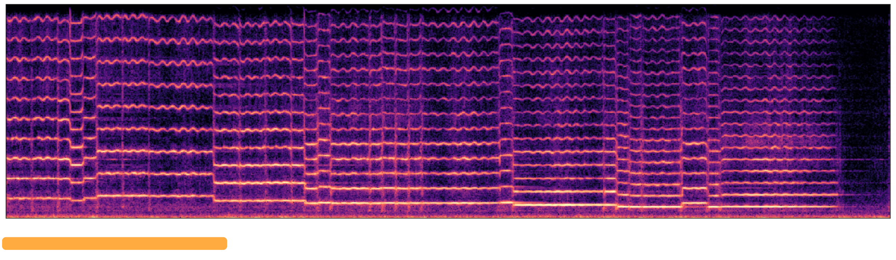
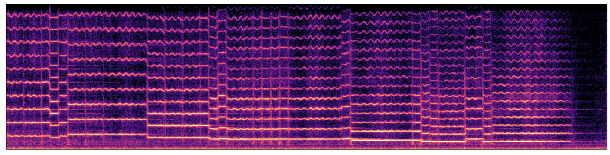
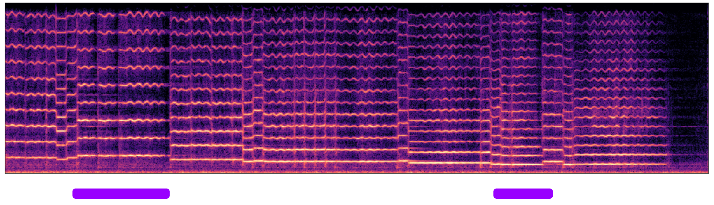
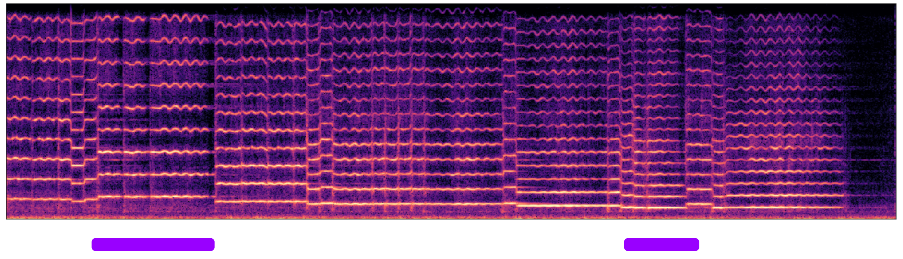

MIDI-DDSP: Detailed Control of Musical Performance via Hierarchical Modeling
Main paper accepted by ICLR 2022
https://openreview.net/pdf?id=UseMOjWENvCode | Blog | Colab Notebook | Huggingface Space | Command-line MIDI Synthesis
Contents
Overview
Fine Grained Control (Figure 2)
Full End-to-End Generation (Figure 6)
Dataset
Performance Synthesis & Adjustment
MIDI Synthesis
Bach Quartet Synthesis
Note Expression Control (Figure 4, 8, 9, and more)
Listening Test (Figure 5, 7)
An Example User Experience
Improvement of GAN (Figure 12)
Pitch Variants in Synthesis
Overview
In this work, we introduce MIDI-DDSP, a hierarchical model of musical instruments that enables both realistic neural audio synthesis and detailed user control. We infer explicit interpretable features for note, performance, and synthesis level, and we build models at each level to generate audio in a hierarchy. Here, we present the audio example results for MIDI-DDSP. For details about the system and architecture, please refer to the paper linked above.

Fine Grained Control
The given performance on violin (top) is manipulated at all three levels (notes, expression, synthesis parameters) to create a new realistic yet personalized performance (bottom). An initial generation is automatically generated from the full MIDI-DDSP model (top), and an expert musician adjusted notes (blue), performance attributes (green), and low-level synthesis parameters (yellow) to craft a personalized expression of a musical piece (bottom).

| Automatic Generation | Adjusted by Human Expert |
|---|---|
Full End-to-End Generation
MIDI-DDSP can take note input from a score level Bach composition model CocoNet and automatically synthesizing a Bach quartet by generating explicit latent for each level in the hierarchy.

CocoNet re-harmonization of Ode to Joy in woodwinds set.
| Mix |
|---|
| Soprano - Flute | Alto - Oboe | Tenor - Clarinet | Bass - Bassoon |
|---|---|---|---|
Thanks to wide range of instrument recordings provided by the URMP dataset, we can also render CocoNet
re-harmonization of Ode to Joy in string set (an octave higher).
| Mix |
|---|
| Soprano - Violin | Alto - Violin | Tenor - Viola | Bass - Cello |
|---|---|---|---|
Dataset
To demonstrate modeling a variety of instruments, we use the URMP dataset, a publicly-available audio dataset containing monophonic solo performances of a variety of instruments. Here we present a selection of the training data we used. Also, the recordings in the URMP dataset are played by students, and the performance quality is substantially lower compared to virtuoso datasets (MAESTRO) used in other work. Typically, some recordings have bad intonation accuracy, which makes MIDI-DDSP also having intonation accuracy problems in synthesis. Here we also present some playings of the training data that are out of tune.

Training Set:
Training set playing out of tune:
Performance Synthesis & Adjustment
MIDI-DDSP enables detailed control, especially performance level control. Here we present given a violin MIDI score, how a human expert violin performer will adjust the automatic generation to makes it to the way an expert will perform.

Viva La Vida:
| Automatic Generation | After Adjustment |
|---|---|
Phantom:
| Automatic Generation | After Adjustment |
|---|---|
And we can also turn a performance from score into another interpretation:
Pirates of the Caribbean:
| Automatic Generation | After Adjustment | Play as Staccato |
|---|---|---|
Automatic MIDI Synthesis

Here we present the automatic score-to-audio synthesis of MIDI-DDSP on generic MIDI input. Learned to perform from data, MIDI-DDSP can generate idiomatic details of human performance. For example, in some syntheses, breathing sounds between notes are generated.
| Game of Thrones - Cello | La Vie En Rose - Trumpet | Viva La Vida - Violin |
|---|---|---|
| Beauty and the Beast - Flute | Cannon in D - Cello | Phantom - Violin |
|---|---|---|
Bach Quartet Synthesis
Here we present MIDI-DDSP automatic Bach quartet synthesis by taking note input from Bach Chorales. Here, we present three types of instrument ensemble: string set, brasswind set and woodwind set. The volume of four parts are mixed with different gains: String set: S +2dB, A +2dB, T -1dB, and B -1dB, Woodwind set: S +2dB, A +2dB, T +5.6dB, and B 2.9dB, Brasswind set: S +1.5dB, A +1.2dB, T 0dB, and B 1.8dB,
BWV 227.1 - String Set
| Ensemble |
|---|
| Soprano - Violin | Alto - Violin | Tenor - Cello | Bass - Double Bass |
|---|---|---|---|
BWV 227.1 - Brasswind Set
| Ensemble |
|---|
| Soprano - Trumpet | Alto - French Horn | Tenor - Trombone | Bass - Tuba |
|---|---|---|---|
BWV 227.1 - Woodwind Set
| Ensemble |
|---|
| Soprano - Flute | Alto - Oboe | Tenor - Clarinet | Bass - Bassoon |
|---|---|---|---|
More Bach Quartet
| BWV165.6 - String Set | BWV178.7 - String Set | BWV180.7 - String Set | BWV245.14 - String Set |
|---|---|---|---|
Note Expression Control

In MIDI-DDSP, manipulating note-level expression can effectively change the synthesis-level quantities. We show by taking a test-set sample (middle row) and adjusting each expression control value to lowest (bottom row) and highest (upper row), how each synthesis quantities (rightmost legend) would change. The dashed gray line in each plot indicates the note boundary.
| Original Sample |
|---|
| Volume - Low | Volume - High | Vol. Fluc. - Low | Vol. Fluc. - High |
|---|---|---|---|
| Vol. Peak Pos. - Low | Vol. Peak Pos. - High | Vibrato - Low | Vibrato - High |
|---|---|---|---|
| Brightness - Low | Brightness - High | Attack Noise - Low | Attack Noise - High |
|---|---|---|---|
More details about note expression controls including Figure 8, 9 and more can be found here.
Listening Test
The listening test results on Test-set MIDI Synthesis. All the audio samples below are generated with only MIDI from test-set as input. MIDI-DDSP synthesizes more realistic audio than a prior work MIDI2Params, and two concatenative samplers.


| Ground-truth | DDSP Inference | MIDI-DDSP |
|---|---|---|
| Ableton | MIDI2Params | FluidSynth |
|---|---|---|
For access to all the samples used in listening test, please check: https://github.com/MIDI-DDSP/MIDI-DDSP.github.io/blob/master/violin_listening_test.zip
For test-set generation of all other instruments, please check: https://github.com/MIDI-DDSP/MIDI-DDSP.github.io/blob/master/test_set_all_other_instruments.zip
An Example User Experience
This section presents a step-by-step user experience of an expert using and adjusting MIDI-DDSP to obtain satisfied music performance. Specifically, the human expert as a violin player will iterate on adjusting note expression controls, starting from what the expression generator predicts for a given piece. Figure below shows the original music score "Viva La Vida" as input to MIDI-DDSP.
 

1. Design and Adjust Articulations
The expert first designs the articulations of the piece based on automatic generation, marking up/down bow and the tie between the note, indicating the connections between notes. The results are shown in Figure below, where ties indicate the notes connected should be played as legato (played consecutively) and should have less attack noise. The expert adjusts the attack noise based on what the articulations designed. In here, the expert lowers the attack noise of the legato notes. The expert first applies the adjustments to the notes. Then, the expert fine-tuned the attack noise adjustments based on the synthesis result of the earlier adjustment.
 

2. Design and Adjust Fingering
The expert designs the fingering based on one's knowledge and experience of violin performance. The results are shown in below. The expert designs the first two measures of the piece to be played on E string ("E- - - -..." mark), and assign the fingering of each note (numbers above the notes). The choice of the string and the fingering of notes affects the brightness of the timbre. That is, playing on the E string should have a brighter timbre, and playing on an open string (fingering number "0") will have a brighter timbre compared to pressing the string (fingering number other than "0"). The expert adjusts the notes' brightness based on the fingering design, based on the principle described above. The expert will first apply an initial adjustment to the brightness, then fine-tune the number according to the synthesis result.
 

3. Adjust Vibrato
The expert adjusts the vibrato of each note. Longer notes will be adjusted to have more vibrato to match how the expert would play the violin. Similarly, the expert first adjusts the note's vibrato based on the model prediction and fine-tune the numbers based on the synthesis result. The synthesized audio is shown in Figure below.
4. Design Special Articulations
The expert designs special articulations of the notes for artistic purposes. In this example, the expert designed some notes to play as staccato. The results are shown in Figure below where the purple dot above the notes indicates it to play as staccato. To adjust notes to staccato, the volume fluctuation, volume peak position, and attack noise needs to be adjusted from the original value. Specifically, the expert increases the volume fluctuation, decreases the volume peak position, and increases attack noise. Similarly, the expert first adjusts the vibrato of the note and fine-tune the numbers based on the synthesis result. In this step, the expert report that decreasing vibrato can help generate better staccato notes.
 

5. Fine-tune the Piece
After all designing and adjustments are made, if needed, the expert takes a final revision of the piece by fine-tuning the expression controls of the notes. In this example, the expert does not fine-tune the piece in the end as the audio synthesized by the previous step is good enough.
Improvement of GAN
Please check here improvement of GAN in synthesis quality.
Pitch Variants in Synthesis
Due to intonation problem in some recordings in the dataset, MIDI-DDSP will also suffer from inaccurate intonation in synthesized audio. Also because the pitch generation in MIDI-DDSP is an auto-regressive sampling process, each time the pitch can be different and MIDI-DDSP would accurately recreate the intonation problems in the dataset. Here we present some samples that has varying pitch accuracy. We plan to address this problem in the future works.
| CocoNet Generation | La Vie En Rose | Phantom |
|---|---|---|
Training Loss Ablation
Here we present the ablation experiment results on training loss of the synthesis generator.
We compare original MIDI-DDSP which trained on cross-entropy loss on f0,
multi-scale spectral loss and GAN objective, with
MIDI-DDSP params loss and MIDI-DDSP without GAN.
MIDI-DDSP params loss is trained on L1 loss on synthesis parameters other than f0 (amplitudes,
harmonic distribution and noise magnitudes), cross-entropy loss on f0 and GAN objective.
MIDI-DDSP without GAN is trained on only multi-scale spectral loss and cross-entropy loss on f0
but no GAN objective.
In conclusion, MIDI-DDSP params loss has similar sound quality than MIDI-DDSP, while
MIDI-DDSP without GAN has notable worse sound quality.
Full audio samples can be found here:
https://github.com/MIDI-DDSP/MIDI-DDSP.github.io/blob/master/eval_set_sample_for_loss_ablation.zip
| MIDI-DDSP | MIDI-DDSP params loss | MIDI-DDSP without GAN |
|---|---|---|
Note Expression Ablation
Here we present the ablation experiment results on note expression to find out if the performance
quality improvement to MIDI2Params comes from the better/bigger model or the additional stage.
For that purpose, we trained a synthesis generator with the same loss and GAN
objective and uses the same hyperparameters as MIDI-DDSP. An audio sample of MIDI synthesis using this model
is presented below.
In conclusion, using only a synthesis generator without note expression can
generate performance audio almost as good as MIDI-DDSP. However, the model will occasionally
generate “dead-pan” notes without any expression (the note starts from 6s in the sample show below).
Thus, the performance improvement of MIDI-DDSP largely comes from using a
better/bigger model, namely a synthesis generator. However, the additional stage (note expression modeling)
makes the audio synthesis more robust and more importantly enables the user editing on performance level.
Full audio samples can be found here:
https://github.com/MIDI-DDSP/MIDI-DDSP.github.io/blob/master/no_expression_experiment.zip
Open Source Image Attribution
The icons used throughout the paper and webpages are used under the Creative Commons license via the Noun
Project. We
gratefully acknowledge the following creators of these images:
Equalizer by fahmionline from the Noun Project
composer by Magicon from the Noun Project
Music Note by Randomhero from the Noun Project
composer by Amethyst Studio from the Noun Project
Violine by Symbolon from the Noun Project
Trumpet by Symbolon from the Noun Project
Audio by cataicon from the Noun Project.
bassoon by Symbolon from the Noun Project.
Clarinet by Symbolon from the Noun Project.
composer by Pham Duy Phuong Hung from the Noun Project.
Flute by Symbolon from the Noun Project.
Neural Network by Ian Rahmadi Kurniawan from the Noun Project.
oboe by Symbolon from the Noun Project.
Synthesizer by Jino from the Noun Project.
Violin by Olena Panasovska from the Noun Project.
Violinist by Luis Prado from the Noun Project.